Lumped-Element Circuit
This paper explains how to implemented distributed components (e.g., transmission line, balun, coupler) with lumped elements.
Transmission Line
Cutoff Frequency
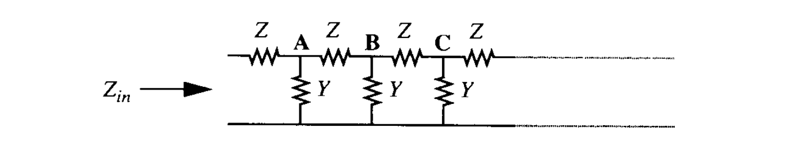
For an infinite ladder network shown above, the input impedance to the right of each nodes is the same (e.g., A, B, C). Therefore, we may write
Solution to the above equation is
Assuming a sufficiently small $|ZY|$, the above is simply
If $Z=sL,Y=sC$, we may note that the input impedance is purely real and act like a resistor. However, the transmission line of infinite length is made of purely reactive elements and does not dissipate power. The solution is that the energy keeps travelling along the line forever.
Suppose that $Y=j\omega C,Z=j\omega L$, the exact input impedance is
It is apparent that the term under the radical becomes positive above a frequency of
which makes the input impedance purely imaginary, and sets an upper bound of the artificial transmission line.
Equivalent-π Representation
we have
To synthesize a $\lambda/4$ transmission line, we need a inductor of $L=Z_0/\omega_0$ and capacitors of $C=1/(\omega_0Z_0)$. Alternatively, we may synthesize $3\lambda/4$ transmission line, the inductor and the capacitor may swap position.
Equivalent-T Representation

we have
To synthesize a $\lambda/4$ transmission line, we need inductors of $Z_0/\omega_0$ and a capacitor of $1/(\omega_0Z_0)$.
Coupled Transmission Line
Transformer-based
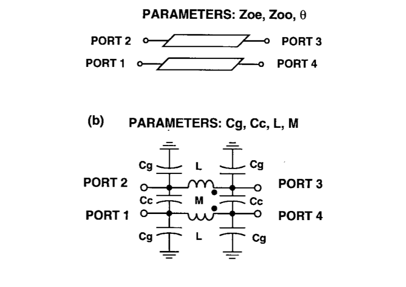
Equating their respective parameters, we have
Define two coupling coefficient as
Then, the even and odd mode characteristic and velocity can be written as
For the desired transverse electromagnetic mode (TEM) propagation, the even-mode and odd-mode propagation velocities should equal to avoid dispersions. Therefore, we have $k_L=k_C$.
For a specified power division, the calculation process is as follows:
- From $k=\sqrt{10^{C/10}}$ and $k_L=k_C$, the coupling coefficients are determined. Note that $C$ denotes the coupled power to input power ratio in decibel.
- From $Z_0=\sqrt{Z_{0o}Z_{0e}}$ and $k_L=(Z_{0e}-Z_{0o})/(Z_{0e}+Z_{0o})$, the even and odd mode characteristic impedances are determined.
- Setting $\theta=\pi/2$ and from the equations, the component values are determined.
For instance, if we want 3-dB power division, then $k\approx0.707$. At 28 GHz, the schematic is
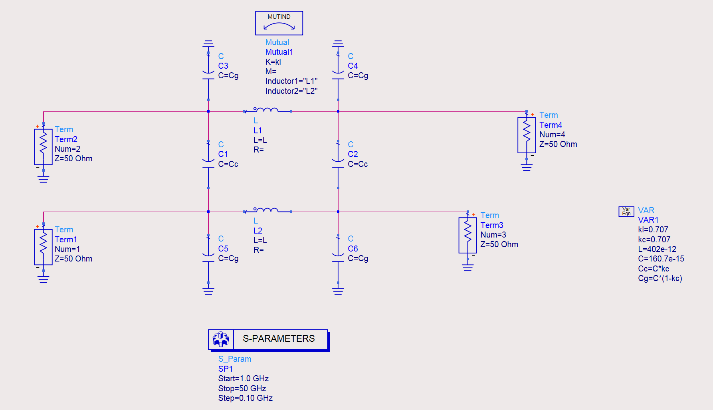
And the simulated results is
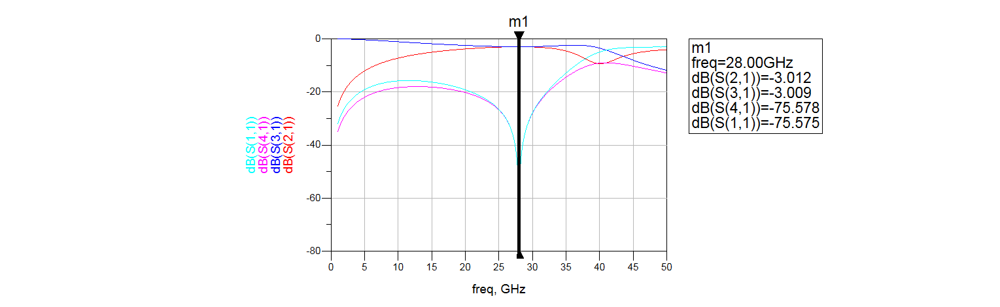
A example of the layout of the lumped-element coupler is as follows:
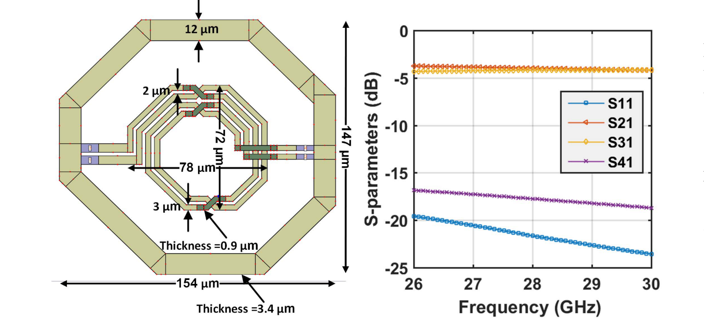
Balun
Lattice-type LC balun
Schematic of the lattice-type LC balun is
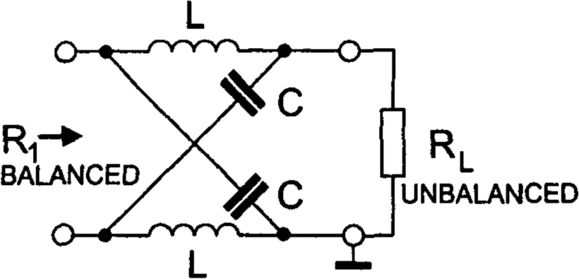
This circuit transforms the balanced input into an unbalanced output by shifting the phase of one input port by +90° and the second input port by −90° and vice versa. To act like a balun, it must have $T_e=0$, which translates to
In that case, we have $Y_e=0$. It is required, therefore, $Y_{odd}=2Y_{in}=2Y_1$. To calculate $Y_o$, we resort to the a differential load, with impedance of $Y_{out}=2R_L$. It can be proved that the input impedance $Z_{odd}$ is
Both equations lead to
Wilkinson Power Divider
Single-ended
Wilkinson power divider is comprised of two $\lambda/4$ transmission lines with $Z_C=\sqrt{2}R$, and a resistor of $2R$ connecting the split terminals. Two transmission lines can be realized using equivalent-π representation, where the two capacitors at one side can be combined.
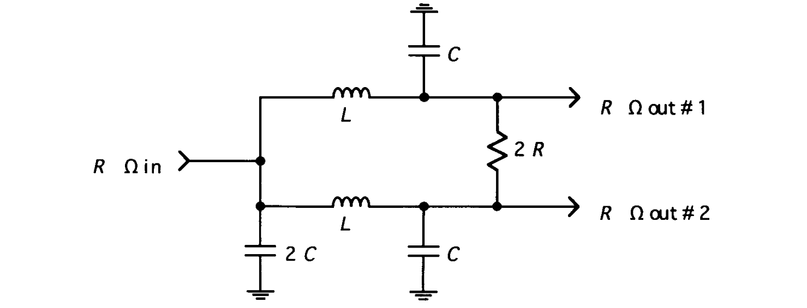
where we have
The same method can be applied to design multi-section Wilkinson power divider to further extend the bandwidth.
Differential
The schematic and the layout of a differential inductor is as follows
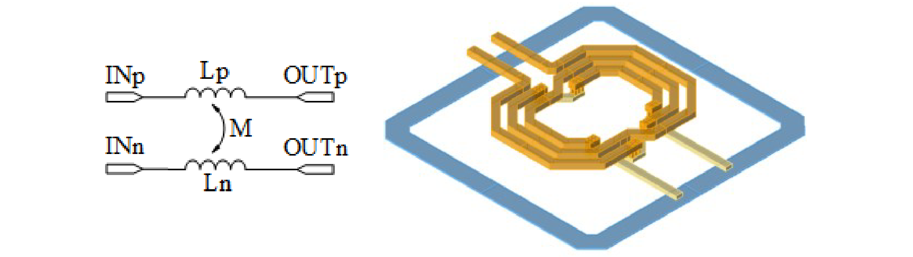
Note that in this design, the mutual inductance is negative if the positive terminals are assumed to locate at the left side. Therefore, if driven differentially, the mutual inductance add to the self-inductance, creating an equivalent inductance $L(1+k)$ for both sides. For the common excitation, however, the equivalent inductance is mitigated to be $L(1-k)$.
The knowledge of mutual inductance can be used to guide the design of the differential Wilkinson power divider. The schematic is show below.
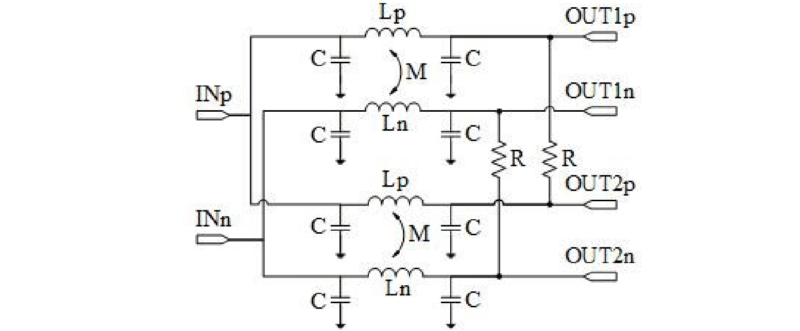
The differential inductor is adopted to provide higher inductance while ensuring compact layout. If the source and load impedance are both $R$, half circuit seen an impedance of $R/2$. Thus, the resistance needed to implement isolation is twice that of the half-circuit characteristic impedance, and is $R$ again. $\lambda/4$ transmission line is realized with differential inductor and the capacitors, with a characteristic impedance of $R/\sqrt{2}$.
Attenuator
π Circuit
Design equations are
where the minimal loss that can be achieved is
T Circuit
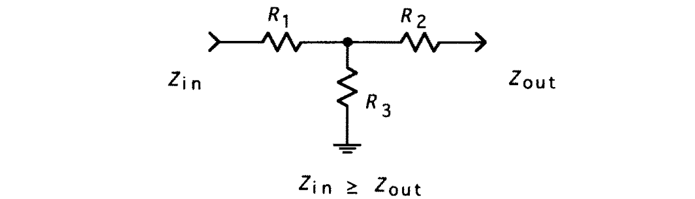
Design equations are
where the minimal loss that can be achieved is
Bridge T Circuit
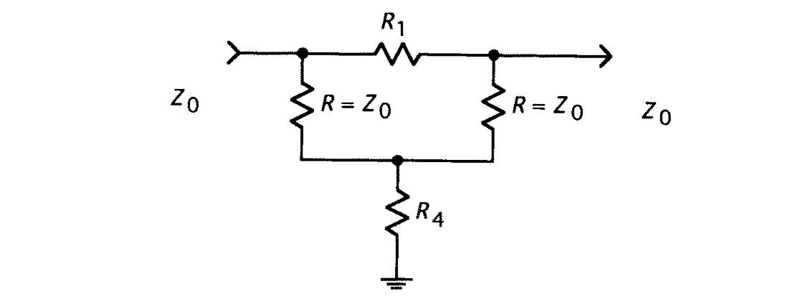
Design equations are
Quadrature Generation
Direct
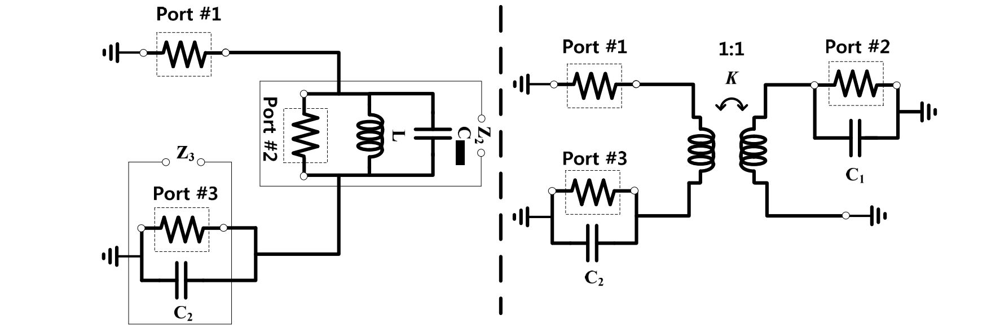
It should satisfy
Since $Z_2+Z_3=50 \Omega$, and we need a 90° phase difference
A high coupling transformer can be used to isolate port 2 from port 3.
For a differential implementation
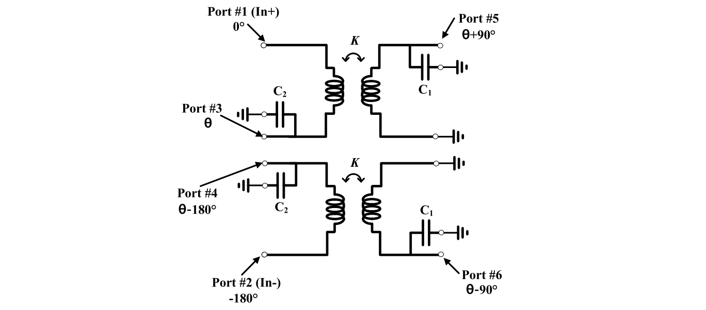
Capacitors can be combined, as
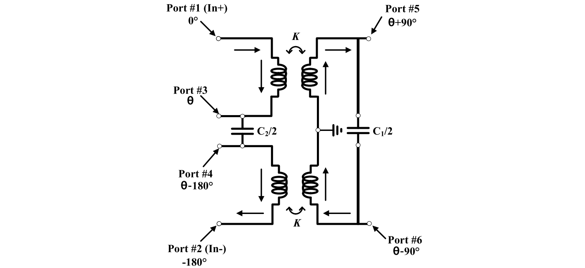
Layout of the above circuit is
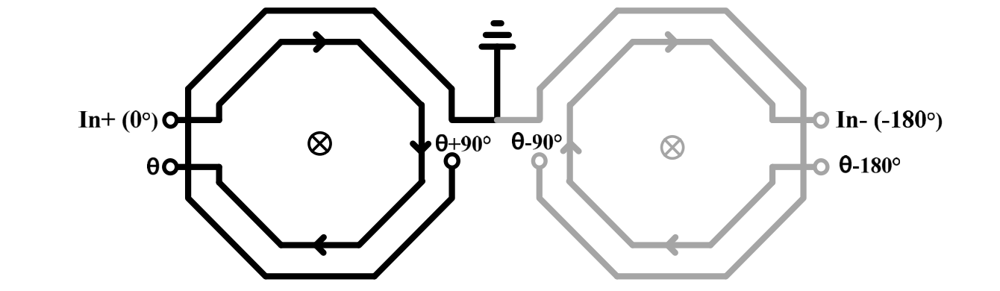
When the right half is rotated
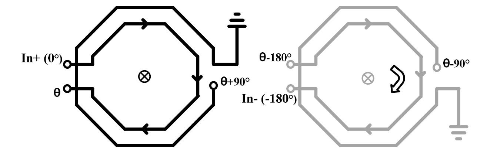
It can be combined with the left coil for area reduction
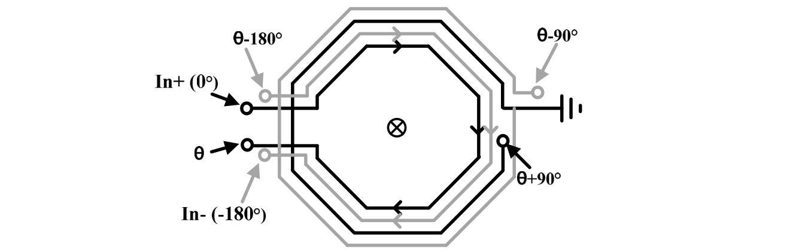
This layout can be further rotated to facilitate port connection
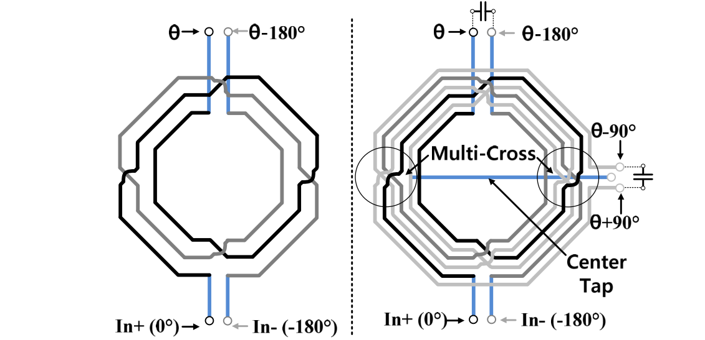
Hybrid
The schematic is given below
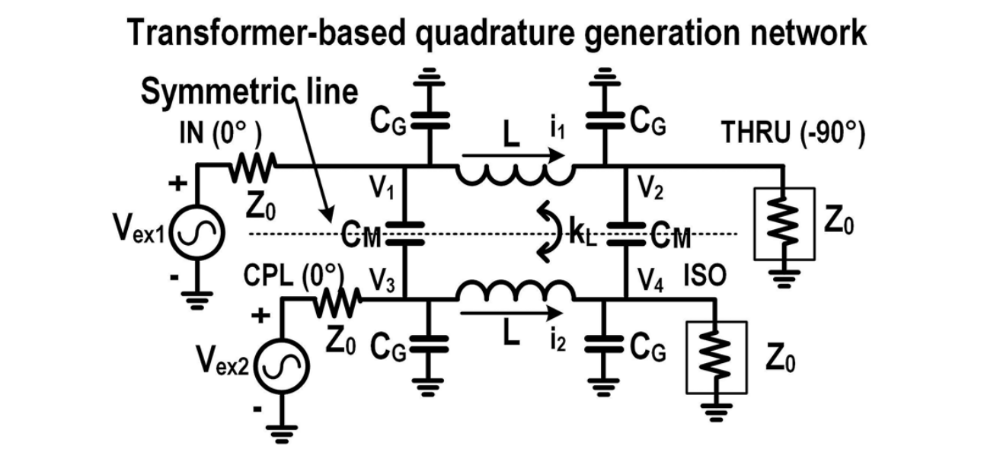
Layout is as follows
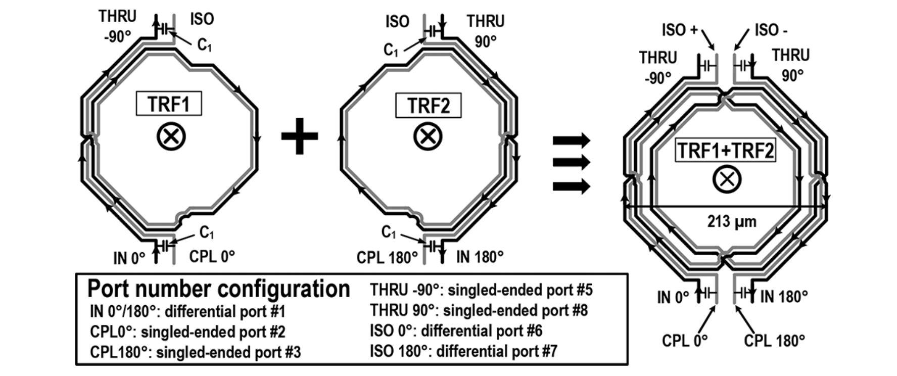
Appendix
Derivation of π-circuit attenuator
1 | Parallel[x_, y_] := x y/(x + y); |
Here we have
If we define $A=10^{L/10}$, it is apparent that
Substitute the equation into the expression, we have
which is equivalent to the expression in the article. The same could be done for the $R_3$.
Reference
For a inspiring discussion of various lumped-element circuit, refer to
- T. H. Lee, Planar Microwave Engineering.
- P. Vizmuller, RF Design Guide - Systems, Circuits, and Equations.
For the transformation of coupled transmission line, refer to
J. Hogerheiden, M. Ciminera and G. Jue, "Improved planar spiral transformer theory applied to a miniature lumped element quadrature hybrid," IEEE Trans. Microw. Theory Techn., vol. 45, no. 4, pp. 543-545, April 1997, doi: 10.1109/22.566635.
R. Garg and A. S. Natarajan, "A 28-GHz low-power phased-array receiver front-end with 360° RTPS phase shift range," IEEE Trans. Microw. Theory Techn., vol. 65, no. 11, pp. 4703-4714, Nov. 2017, doi: 10.1109/TMTT.2017.2707414.
For the design of the lattice balun, refer to
- W. Bakalski, W. Simburger, H. Knapp, H. -D. Wohlmuth and A. L. Scholtz, "Lumped and distributed lattice-type LC-baluns," 2002 IEEE MTT-S Int. Microw. Symp. Digest, Seattle, WA, USA, 2002, pp. 209-212 vol.1, doi: 10.1109/MWSYM.2002.1011595.
For more details about single-ended and differential Wilkinson power divider, refer to
- M. Balducci and H. Schumacher, "Ka band passive differential 4:1 power divider/combiner based on Wilkinson topology," 2017 13th Conference on Ph.D. Research in Microelectronics and Electronics (PRIME), Giardini Naxos, 2017, pp. 189-192.
For more information about quadrature signal generation, refer to
- J. S. Park, S. Kousai and H. Wang, "A fully differential ultra-compact broadband transformer based quadrature generation scheme," Proc. Custom Integr. Circuits Conf., San Jose, CA, 2013, pp. 1-4, doi: 10.1109/CICC.2013.6658546.
- J. S. Park and H. Wang, "A transformer-based poly-phase network for ultra-broadband quadrature signal generation," IEEE Trans. Microw. Theory and Techn., vol. 63, no. 12, pp. 4444-4457, Dec. 2015, doi: 10.1109/TMTT.2015.2496187.
- Post link: https://triblemany.github.io/archives/df4c5938/lumped-element-circuit.html
- Copyright Notice: All articles in this blog are licensed under BY-NC-SA unless stating additionally.